The HierarchyNavigator control is fully customizable by using Expression Blend.
The steps to create a HierarchyNavigator control in a WPF application by using Expression Blend are as follows:
1. Open the Expression Blend application.
2. On the File menu, click New Project. This opens the New Project dialog box.

Figure 557: File menu in Expression Blend
3. In the Name field, type the name of the project, and then click OK.
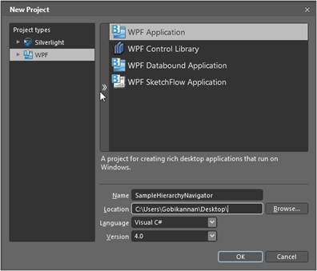
Figure 558: New Project dialog
4. Add the following references with the sample project:
· Syncfusion.Shared.WPF.dll
· Syncfusion.Tools.WPF.dll
5. On the Window menu, select Assets. This opens the Assets Library dialog box.
6. In the search box, type HierarchyNavigator, and then press ENTER. This displays the search results.
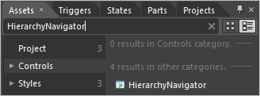
Figure 559: Assets library
7. Drag the HierarchyNavigator control to Design View.
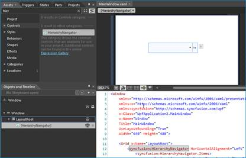
Figure 560: Expression Blend Design View
8. Select the HierarchyNavigator control from the Objects and Timeline Pane and navigate to Miscellaneous, located in the Properties pane; click the button next to the Items collection. This will display the Object Collection Editor dialog box.
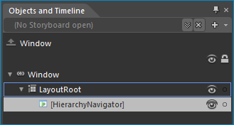
Figure 561: Objects and Timeline pane
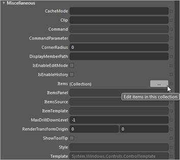
Figure 562: Properties window
The HierarchyNavigator Collection Editor contains the Items and the Properties pane. The Items pane contains a list of items that can be added to the HierarchyNavigator control.
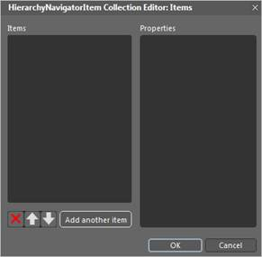
Figure 563: HierarchyNavigator Collection Editor
9. Click the Add another item button, to add an item in the Items pane, and then in the Properties pane add content and items for the selected item.
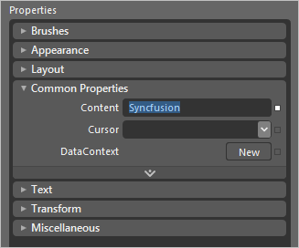
Figure 564: Properties pane
10. To add items in a hierarchical data format, in the Properties pane, find the Items field and add items to the next level.
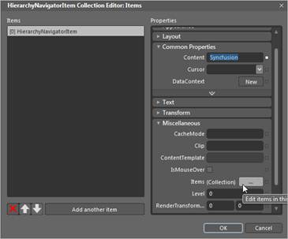
Figure 565: Items field to the left
The items will then be displayed in XAML, as shown in the following figure:
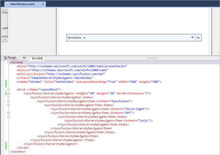
Figure 566: Items displayed in XAML
Editing a HierarchyNavigator Template in Expression Blend
You can edit a HierarchyNavigator control after it is added. The steps to edit a HierarchyNavigator control in Expression Blend are as follows:
1. Select the HierarchyNavigator control.
2. On the Object menu, select Edit Style, and then select Edit a Copy. This opens the Create Style Resource dialog box.
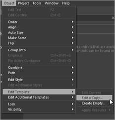
Figure 567: Edit Style in Object menu
3. In the Name field, type the style name.
4. In the Define in section, select This document, and then select the user control.
5. Click the OK button, to create a default style for the HierarchyNavigator control so that each part can be customized. Refer Customizing templates with Expression Blend.
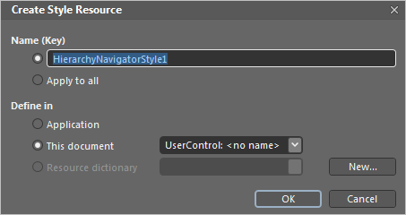
Figure 568: Create Style Resource dialog